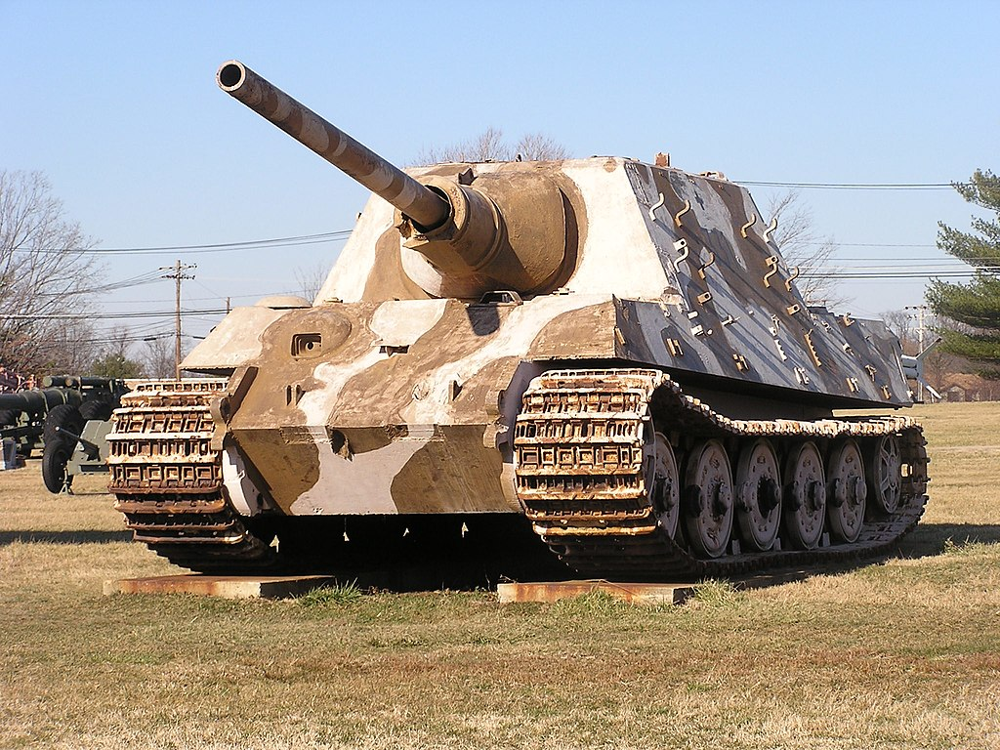

|  |
|
«Ягдтигр» (нем. Jagdtiger), полное официальное название Panzerjäger Tiger Ausf. B — германская самоходная артиллерийская установка (САУ) периода Второй мировой войны. По германской ведомственной системе обозначений военной техники относится к типу противотанковых «Panzerjäger» (нем. panzer — танк, нем. jäger — охотник), носил индекс Sd.Kfz.186. Был разработан в 1942-1944 годах на шасси тяжёлого танка «Тигр II». «Ягдтигр» серийно производился с 1944 по 1945 год, однако, из-за перебоев с поставками материалов и разрушения заводов воздушными бомбардировками, было сдано заказчику всего 77 САУ этого типа. Из-за малочисленности выпущенных машин, их ненадёжности и постоянной проблемы нехватки горючего для них, боевое применение «Ягдтигров» было ограниченным и не оказало влияния на ход войны, хотя те машины, которым всё же довелось вступить в бой, продемонстрировали способность уверенно уничтожить любой из участвовавших в войне образцов бронетехники стран антигитлеровской коалиции, при этом оставаясь в лобовой проекции почти неуязвимым для их огня. Тем не менее, многие из этих САУ были попросту брошены экипажами после израсходования боеприпасов, топлива или после поломки. «Ягдтигр» имел компоновку с размещением моторного отделения в кормовой части, совмещённого трансмиссионного отделения и отделения управления — в лобовой части, а боевого отделения — в неподвижной рубке в средней части корпуса. Экипаж САУ состоял из шести человек: механика-водителя и стрелка-радиста, располагавшихся в отделении управления и наводчика, командира и двух заряжающих, находившихся в боевом отделении. |